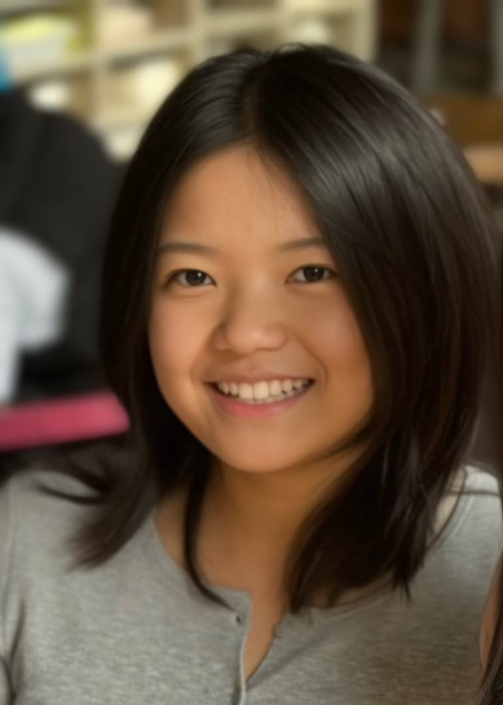
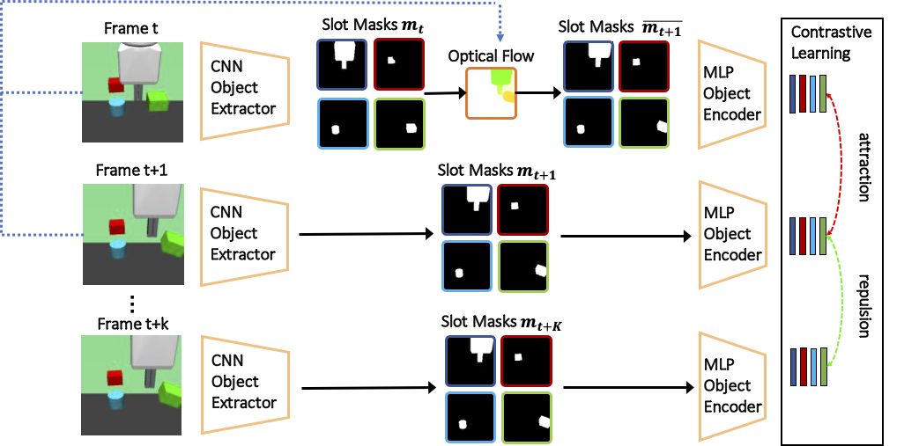
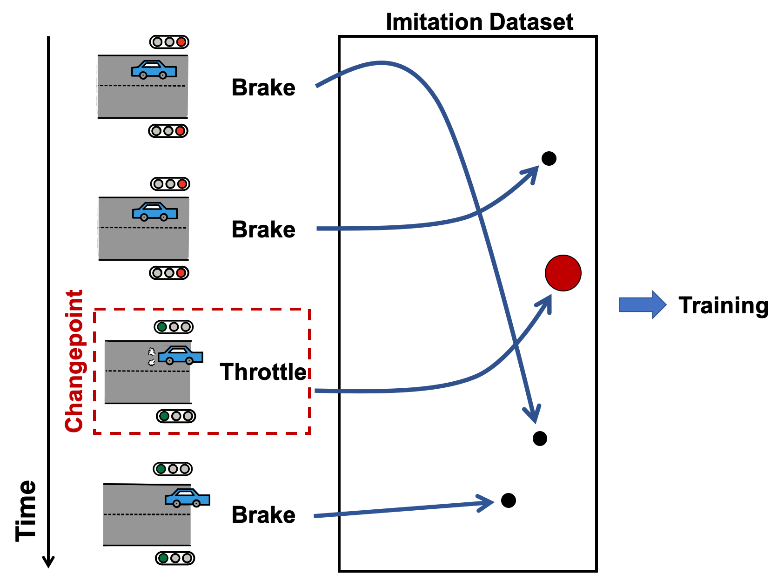

|
Jianing(Aurora) Qian Hi! I'm a fourth year PhD Student advised by Prof. Dinesh Jayaraman at the University of Pennsylvania. I am awarded the AWS Fellowship 2023 for conducting research on trustworthy AI. Prior to my PhD, I received my BS/MS in CS and Robotics from Carnegie Mellon University, where I worked with Prof. Dave Held and Prof. Howie Choset. |
 |
{kind=link}
ResearchI'm interested in computer vision, robotic perception and manipulation. I am current working on acquiring object-centric visual representations that are interpretable to humans, and learning structured visuomotor control policies for robots that exploit these visual representations, through imitation and reinforcement learning. |

|
Fighting Fire with Fire: Avoiding DNN Shortcuts through Priming
Chuan Wen, Jianing Qian, Jierui Lin, Dinesh Jayaraman , Yang Gao, International Conference on Machine Learning (ICML), 2022 project page / code / arXiv |
|  |
Object Representations Guided By Optical Flow
Jianing Qian, Dinesh Jayaraman , NeurIPS Robot Learning Workshop, 2021 pdf slides |
|  |
Keyframe-Focused Visual Imitation Learning
Chuan Wen*, Jierui Lin*, Jianing Qian, Yang Gao, Dinesh Jayaraman , International Conference on Machine Learning (ICML), 2021 project page / code / arXiv |

|
Cloth Region Segmentation for Robust Grasp Selection
Jianing Qian*, Thomas Weng*, Luxin Zhang, Brian Okorn, David Held , International Conference on Intelligent Robots and Systems (IROS), 2020 project page / code / arXiv |
|
Feel free to steal this website's source code. Do not scrape the HTML from this page itself, as it includes analytics tags that you do not want on your own website — use the github code instead. Also, consider using Leonid Keselman's Jekyll fork of this page. |